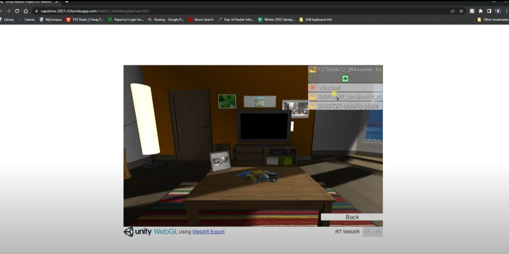

Virtual Reality Reminiscence Therapy
Integrated an existing web application with Unity application using WebGL

Integrated an existing web application with Unity application using WebGL
Developed a virtual reality (VR) application in Unity and integrated it with an existing web application hosted on Heroku, and used Github for version control. The application was used by the Ontario Tech University for clinical trials at The Ontario Shores Centre for Mental Health Sciences as a form of reminiscence therapy for patients with dementia.
Technologies used include: Heroku, PHP, MySQL, JavaScript, HTML, and C#